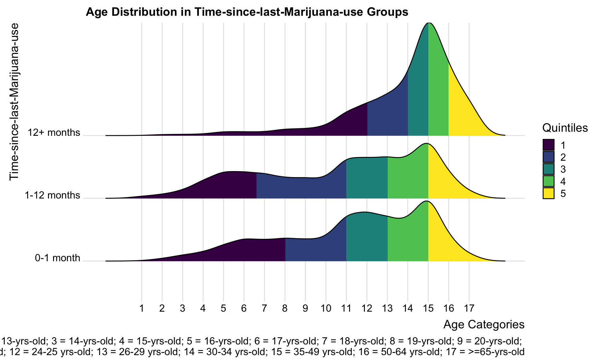
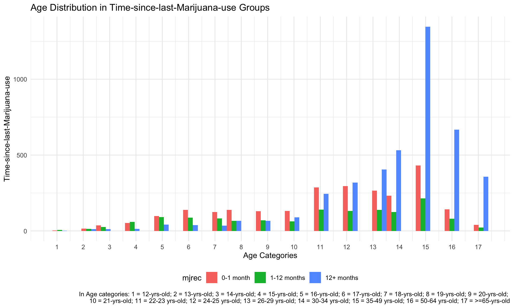

nsduh_df = read_csv("data/nsduh_19.csv")## Rows: 56136 Columns: 15
## ── Column specification ──────────────────────────
## Delimiter: ","
## dbl (15): questid2, age2, mr30est, catag6, newrace2, irmjage, mjrec, mrjmon,...
##
## ℹ Use `spec()` to retrieve the full column specification for this data.
## ℹ Specify the column types or set `show_col_types = FALSE` to quiet this message.mari_df = nsduh_df %>%
filter(mjrec == c("1", "2", "3")) %>%
mutate(mjrec = recode(mjrec, "1" = "0-1 month",
"2" = "1-12 months",
"3" = "12+ months")) %>%
group_by(mjrec)In 2019 NSDUH, investigators collected information about time-since-last-marijuana-use. The question in the survey was: “how long has it been since you last used marijuana or hashish?” According to the code book, answers to this question are: “within the past 30 days (13.62%),”more than 30 days ago but within the last 12 months (7.47%)“,”more than 12 months ago (22.3%)“,”used in the past 30 days - logically assigned (0.01%), “used in the past 12 months - logically assigned (0.36%),”used at some point in the lifetime - logically assigned (0.39%), “never used marijuana (55.78%)”, “refused (0.03%)”, and “blank” (0.04%)“.
Additionally, we also want to use the age information which was
recoded as age2 in the 2019 NSDHU data set. Researchers
coded participants’ age into 17 categories, including:
In our exploratory step, we excluded people who answered “never used marijuana” since they are not the group we are interested in. Then, we also dropped the logically assigned answers and people who answered “refused” and “blank” to avoid misclassification. Although this can reduce our statistical power, dropped values only count for less than 1% (0.83%) of the entire sample group. We assume dropping them will not affect the data presentation. Finally, we constructed two plots to explore the relationship between age and time-since-last-marijuana-use groups.
mari_df %>%
ggplot(aes(x = age2, y = mjrec, fill = factor(stat(quantile)))) +
stat_density_ridges(geom = "density_ridges_gradient", calc_ecdf = TRUE, quantiles = 5, alpha = 0.5) +
scale_fill_viridis_d(name = "Quintiles") +
theme_ridges() +
labs(title = "Age Distribution in Time-since-last-Marijuana-use Groups",
x = "Age Categories",
y = "Time-since-last-Marijuana-use",
caption = "In Age categories: 1 = 12-yrs-old; 2 = 13-yrs-old; 3 = 14-yrs-old; 4 = 15-yrs-old; 5 = 16-yrs-old; 6 = 17-yrs-old; 7 = 18-yrs-old; 8 = 19-yrs-old; 9 = 20-yrs-old; \n10 = 21-yrs-old; 11 = 22-23 yrs-old; 12 = 24-25 yrs-old; 13 = 26-29 yrs-old; 14 = 30-34 yrs-old; 15 = 35-49 yrs-old; 16 = 50-64 yrs-old; 17 = >=65-yrs-old") +
scale_x_continuous(breaks = c(1,2,3,4,5,6,7,8,9,10,11,12,13,14,15,16,17))## Picking joint bandwidth of 0.583
Comparing the age distributions among time-since-last-marijuana-use groups, only the curve for “12+ months” group has one obvious peak located at “age = 15” (35-49 yrs-old). Curves for other two groups look more like tri-modal distribution which has more than one peak.
If we compare quantiles among the 3 groups, the “12+ months” group has a very different age distribution. Younger than 34-year-olds contributed to the first two quintiles, while older than 50-year-olds contributed to the last quintile. However, the first two quintiles of the “0-1 month” and “1-12 months” groups were occupied by people younger than 23, and the last quintile by people older than 35. As a result, there are relatively more younger people in the “0-1 month” and “1-12 months” groups.
Additionally, the first 20% of people in the “0-1 month” group are people younger than 19, and the first 20% of people in the “1-12 months” group are people younger than 18 years old. This difference is relatively small, and these two groups have very similar age distribution based on quintiles.
mari_df %>%
ggplot(aes(x = age2, fill = mjrec)) +
geom_histogram(position = "dodge") +
labs(title = "Age Distribution in Time-since-last-Marijuana-use Groups",
x = "Age Categories",
y = "Time-since-last-Marijuana-use",
caption = "In Age categories: 1 = 12-yrs-old; 2 = 13-yrs-old; 3 = 14-yrs-old; 4 = 15-yrs-old; 5 = 16-yrs-old; 6 = 17-yrs-old; 7 = 18-yrs-old; 8 = 19-yrs-old; 9 = 20-yrs-old; \n10 = 21-yrs-old; 11 = 22-23 yrs-old; 12 = 24-25 yrs-old; 13 = 26-29 yrs-old; 14 = 30-34 yrs-old; 15 = 35-49 yrs-old; 16 = 50-64 yrs-old; 17 = >=65-yrs-old") +
scale_x_continuous(breaks = c(1,2,3,4,5,6,7,8,9,10,11,12,13,14,15,16,17))## `stat_bin()` using `bins = 30`. Pick better value
## with `binwidth`.
According to the histogram plot, in the 13-year-old, 14-year-old, 16-year-old, 17-year-old, 18-year-old, 19-year-old, 20-year-old, 21-year-old, 22-to-23-year-old groups, the time-since-last-marijuana-use for people are most likely be “0-1 month”. However, for people older than 24, the time-since-last-marijuana-use are more likely to be “12+ months”. Consequently, as people get older, they tend to use marijuana less often.